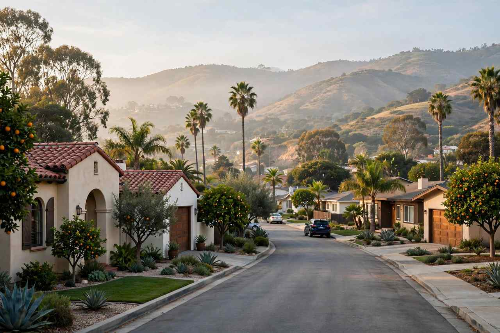

Rodent Control · Lytle Creek, CA
Fast Rodent Control in Lytle Creek, CA
Murvo delivers same-day rodent control in Lytle Creek for rats and mice in attics, walls, kitchens, and crawl spaces. Local crews start with a thorough inspection, then remove, exclude, and monitor until the problem is solved. You approve one flat-rate price in writing before any work starts, and every job carries a written guarantee across San Bernardino County. From Crestline, Rancho Cucamonga, Wrightwood to every corner of San Bernardino County, 1 ZIP codes are covered by local Murvo crews.
24/7Availability
1ZIP codes covered
Same-dayResponse
Licensed · Upfront options · Written guarantees · Fully insured
Lytle Creek at a glance
Local Rodent Control for Lytle Creek, CA.
San Bernardino County
Countysoutheast California
RegionRancho Cucamonga · 9 mi
Nearest metro372 miles southeast of Sacramento
From Sacramento1
ZIP codes covered Service by service in Lytle Creek
Rodent Control Services Available in Lytle Creek
The full range of residential and commercial rodent services in Lytle Creek and San Bernardino County - built around the species and housing here, from emergency removal and same-day control to exclusion, proofing, trapping, cleanup, and damage repair. Every service below is quoted flat-rate in writing and backed by our workmanship guarantee.
- 01Rodent Control↗
- 02Rodent Inspection↗
- 03Rodent Removal↗
- 04Rodent Exclusion↗
- 05Rodent Proofing↗
- 06Rat Control↗
- 07Mice Control↗
- 08Mouse Removal↗
- 09Rat Removal↗
- 10Rodent Trapping↗
- 11Rodent Baiting↗
- 12Rodenticide Application↗
- 13Attic Rodent Removal↗
- 14Crawl Space Rodent Removal↗
- 15Wall Rodent Removal↗
- 16Kitchen Rodent Control↗
- 17Garage Rodent Control↗
- 18Commercial Rodent Control↗
- 19Residential Rodent Control↗
- 20Emergency Rodent Removal↗
- 21Same-Day Rodent Control↗
- 22Rodent Damage Repair↗
- 23Rodent Waste Cleanup↗
- 24Rodent Disinfection↗
- 25Rodent Odor Removal↗
- 26Dead Rodent Removal↗
- 27Rodent Dropping Cleanup↗
- 28Rodent Exclusion for Roofs↗
- 29Rodent Exclusion for Vents↗
- 30Rodent Exclusion for Chimneys↗
Rodent Control in Lytle Creek
Rodent Control in Lytle Creek
A single mouse sighting in a Lytle Creek kitchen rarely means a single mouse. Rodents breed fast, contaminate food areas, and gnaw wiring long before the damage is obvious. Murvo responds with same-day appointments where available, a background-checked local crew, and a coordinated program of trapping, exclusion, cleanup guidance, and monitoring that keeps working after the first visit ends.
Homeowners in Lytle Creek call Murvo for rodent control because the problem here is specific: Roof rat (Rattus rattus) pressure around bungalows and ranch homes, Victorians and stucco row homes, hillside homes, and suburban homes near canyons and open space, tight access at rooflines, eaves and attic vents, crawlspace and raised-foundation gaps, and garage door seals, and activity that follows the local season. Our San Bernardino County crews diagnose the real source before recommending work, explain the options in plain language, and quote one flat rate in writing. Across Lytle Creek - including Rancho Cucamonga, Wrightwood - every visit is backed by licensed, insured technicians and our written workmanship guarantee. Homes near Crestline tend to show activity first in Lytle Creek, which is why inspections start with rooflines, eaves and attic vents, crawlspace and raised-foundation gaps, and garage door seals.
Consider how a visit unfolds. Cleanup guidance covers contaminated areas safely, and exclusion work closes the route permanently. Throughout, photographs and written notes keep you informed, so progress is something you can see and verify rather than something you are asked to trust. The technician walks the exterior before touching anything indoors, noting gaps, rub marks, and food sources. Inside, attic and crawl-space evidence shapes the trapping plan, which is adjusted visit by visit as numbers change. Photographs taken at the start make those later comparisons honest, because memory alone tends to blur the details.
Booking takes one call, and same-day appointments are available in most Lytle Creek areas. At the final visit we walk the finished work together and confirm monitoring is clear. Your technician inspects first, talks you through the plan in plain language, and only starts once you approve the written quote. Work is carried out in stages, with trap checks and sealing visits booked ahead. Questions are answered at every stage, day or night.
Need help quickly in Lytle Creek? Call any time — the emergency line is staffed 24/7, and same-day rodent control appointments are available in most areas. We inspect first, explain the plan in plain language, and put the flat rate in writing before work starts. That is also why Murvo pairs removal with exclusion in Lytle Creek - treating the animal without closing rooflines, eaves and attic vents, crawlspace and raised-foundation gaps, and garage door seals rarely lasts.
Murvo does not quote rodent control sight unseen, because species, activity, and sealing needs change the work involved. After inspection you get one flat-rate written quote, and that is the figure you pay. As national context only, Angi's 2026 figures put rat and mouse removal and control at an average of $396, with a typical range of $189 to $655 — a benchmark, not a Murvo price.
Rodent Inspection in Lytle Creek
Rodent Inspection in Lytle Creek
In San Bernardino County, bungalows and ranch homes, Victorians and stucco row homes, hillside homes, and suburban homes near canyons and open space often hide entry gaps that stay invisible from ground level: lifted shingles, unsealed pipe penetrations, and garage door corners where Roof rat (Rattus rattus) and House mouse (Mus musculus) slip through. A Murvo rodent inspection covers the roofline, foundation, attic, and crawl space in one visit, so you learn exactly where rodents get in and what closing each gap involves.
When you need rodent inspection in Lytle Creek, the job starts with what is actually happening in your part of San Bernardino County. Murvo crews work Lytle Creek every week, so they know how Roof rat (Rattus rattus) and House mouse (Mus musculus) behave around bungalows and ranch homes, Victorians and stucco row homes, hillside homes, and suburban homes near canyons and open space here - and where they get in: rooflines, eaves and attic vents, crawlspace and raised-foundation gaps, and garage door seals. We arrive equipped for the full job, confirm the flat rate in writing before work begins, and cover the whole Lytle Creek area, including Rancho Cucamonga, Wrightwood. No call-center runaround and no open-ended hourly billing - just a local crew, a clear plan, and a written quote you approve first. The Lytle Creek crews who handle rodent inspection also handle the follow-through - proofing, cleanup, and monitoring - so one visit can close the whole problem.
Think of the inspection as three passes. The exterior pass checks siding, vents, pipe entries, and roof junctions for gaps and rub marks. The interior pass covers attic insulation, crawl-space corners, and kitchen voids for droppings, nests, and gnawing. The review pass brings it together: species, likely numbers, contamination, and the order in which fixes should happen. Each pass is photographed, and nothing is recommended without evidence from one of those passes to support it. The report separates what rodents are doing now from what the structure merely allows them to do later.
Your part is simple: point out noises, droppings, and any past problems. Before leaving, you walk through the evidence together, discuss priorities, and decide what happens next, with no obligation attached. Ours is everything else. A background-checked technician arrives on time, protects access areas, and inspects inside and out against a set checklist. If you decide to proceed, those findings become the working plan, so no second survey is needed before approved repairs begin.
Inspections are the fastest way we help in Lytle Creek: same-day appointments are available in most areas, and urgent calls are answered 24/7. A typical rodent inspection takes under an hour for most homes, and you leave the visit with photos, written findings, and a flat-rate quote for any work we recommend, so decisions never wait on us. In San Bernardino County, activity follows the local season, so timing the work matters as much as the method.
Your exact rodent inspection price is confirmed before we visit, and any follow-up work is quoted as a flat rate in writing after the inspection — no hourly billing. For context, Angi's 2026 data puts a professional rodent inspection nationally at $100 to $200, often credited toward the job if you proceed.
Rodent Removal in Lytle Creek
Rodent Removal in Lytle Creek
Most Lytle Creek removal calls start after a homeowner has already tried a store-bought trap and caught nothing. The difference is placement and persistence. Murvo locates nests first, sets traps on confirmed routes for Roof rat (Rattus rattus) and House mouse (Mus musculus), returns until catches end, and quotes the whole program as one flat-rate written quote.
In Lytle Creek, rodent removal is not a generic spray-and-go service. Rodents exploit rooflines, eaves and attic vents, crawlspace and raised-foundation gaps, and garage door seals in bungalows and ranch homes, Victorians and stucco row homes, hillside homes, and suburban homes near canyons and open space, and a fix that ignores those routes does not last. Murvo's Lytle Creek team inspects first, shows you the evidence - droppings, gnaw marks, entry gaps - and then lays out the work with a flat-rate written quote. We serve all of San Bernardino County from Lytle Creek, including Rancho Cucamonga, Wrightwood, and every job is covered by our written workmanship guarantee. Around Crestline, Rancho Cucamonga, Wrightwood, the pattern is similar: House mouse (Mus musculus) finds rooflines, eaves and attic vents, crawlspace and raised-foundation gaps, and garage door seals first, and lasting rodent removal has to close those routes.
Removal here is measured in records, not impressions. When the log stays empty across repeat checks, removal is genuinely finished. Sealing recommendations follow immediately, because a clear home with open gaps will not stay clear for long in Lytle Creek. Each trap is numbered, mapped, and checked on schedule, and every catch is logged against its location. That log shows where activity concentrates, where it is fading, and where a placement needs to move. That record also protects you, because it shows exactly when activity ended rather than when visits simply stopped.
Same-day removal appointments are available across much of Lytle Creek for active infestations. Every stage is explained in plain language as work proceeds. After a quick inspection, your background-checked technician explains the trapping plan and gives you a flat-rate written quote; work starts only with your approval. Follow-up checks are booked before we leave, contaminated areas are made safe, and monitoring confirms the property is clear before we sign off. You keep copies of all visit records.
For active infestations in Lytle Creek, rodent removal can usually start the same day you call, and our team answers 24/7 when a rodent is loose in a living area. The first visit confirms activity and sets traps straight away; return visits then clear and reset them until monitoring shows the property is completely clear. That is also why Murvo pairs removal with exclusion in Lytle Creek - treating the animal without closing rooflines, eaves and attic vents, crawlspace and raised-foundation gaps, and garage door seals rarely lasts.
Cost depends on the species, how many animals are active, and how much sealing the home needs afterwards, so Murvo inspects first and quotes one flat rate in writing. For national context only, Angi's 2026 data averages rat and mouse removal at $396, typically $189 to $655. That benchmark is not a Murvo price; your written quote is the exact figure.
Rodent Exclusion in Lytle Creek
Rodent Exclusion in Lytle Creek
Rats can pass through a hole the size of a quarter, and mice through one far smaller, which is why bungalows and ranch homes, Victorians and stucco row homes, hillside homes, and suburban homes near canyons and open space in Lytle Creek hide so many working entry points around rooflines, eaves and attic vents, crawlspace and raised-foundation gaps, and garage door seals. Our technicians inspect soffits, eaves, pipe entries, foundation cracks, and door sweeps in detail, then prioritize the openings that matter most for Roof rat (Rattus rattus) and House mouse (Mus musculus) locally.
Homeowners in Lytle Creek call Murvo for rodent exclusion because the problem here is specific: Roof rat (Rattus rattus) pressure around bungalows and ranch homes, Victorians and stucco row homes, hillside homes, and suburban homes near canyons and open space, tight access at rooflines, eaves and attic vents, crawlspace and raised-foundation gaps, and garage door seals, and activity that follows the local season. Our San Bernardino County crews diagnose the real source before recommending work, explain the options in plain language, and quote one flat rate in writing. Across Lytle Creek - including Rancho Cucamonga, Wrightwood - every visit is backed by licensed, insured technicians and our written workmanship guarantee. Around Crestline, Rancho Cucamonga, Wrightwood, the pattern is similar: House mouse (Mus musculus) finds rooflines, eaves and attic vents, crawlspace and raised-foundation gaps, and garage door seals first, and lasting rodent exclusion has to close those routes.
The sequence matters as much as the materials. Photographs record every finished seal with its location, building a reference you keep. Because a properly sealed home needs far less ongoing treatment, exclusion also lowers long-term reliance on bait. A later monitoring check tests the work honestly, revisiting each sealed point for fresh rub marks, droppings, or gnawing. Active openings are closed first, inactive weaknesses next, and purely cosmetic gaps last, so protection arrives where pressure is highest. The final monitoring visit therefore matters as much as the sealing day itself, and its findings are shared.
The visit starts with a check that no animals remain inside, using trapping and monitoring where needed. Once clear, your background-checked crew seals the agreed openings with chew-resistant materials, working cleanly around your home. Before leaving, we show you each finished seal, explain how it was protected, and confirm the guarantee paperwork. A later re-check confirms the seals are holding and activity has stopped. You approve the finished work before we close the job.
The first step is a survey, and in Lytle Creek we can often schedule that survey the same day you call about rodent exclusion. Sealing follows once active animals are cleared — nothing is ever sealed inside — and most homes are fully sealed within days, with entry points near wiring or food areas handled first. Murvo's Lytle Creek crews explain the finding either way, and the flat-rate quote leaves the decision with you.
For national context, Angi's 2026 data puts basic exclusion at $200 to $600, depending on access and the number of openings. That is a benchmark, not a Murvo price. After surveying your Lytle Creek home, we list every opening that needs sealing and quote one flat rate in writing, so you pay for the work your property actually needs and nothing more.
Rodent Proofing in Lytle Creek
Rodent Proofing in Lytle Creek
The best rodent problem is the one that never starts. Rodent proofing in Lytle Creek hardens your home before Roof rat (Rattus rattus) and House mouse (Mus musculus) move in: sealing gaps, screening vents, fitting door sweeps, and removing the food and shelter that attract them. Murvo surveys the whole property, prioritizes the work, and gives one flat-rate written quote for the work.
In Lytle Creek, rodent proofing is not a generic spray-and-go service. Rodents exploit rooflines, eaves and attic vents, crawlspace and raised-foundation gaps, and garage door seals in bungalows and ranch homes, Victorians and stucco row homes, hillside homes, and suburban homes near canyons and open space, and a fix that ignores those routes does not last. Murvo's Lytle Creek team inspects first, shows you the evidence - droppings, gnaw marks, entry gaps - and then lays out the work with a flat-rate written quote. We serve all of San Bernardino County from Lytle Creek, including Rancho Cucamonga, Wrightwood, and every job is covered by our written workmanship guarantee. Around Crestline, Rancho Cucamonga, Wrightwood, the pattern is similar: House mouse (Mus musculus) finds rooflines, eaves and attic vents, crawlspace and raised-foundation gaps, and garage door seals first, and lasting rodent proofing has to close those routes.
Where proofing overlaps with structural exclusion, we use the same chew-resistant materials: copper mesh, hardware cloth, metal flashing, and durable sealants matched to each opening. The written plan distinguishes homeowner tasks from professional work, and seasonal re-checks after completion catch new gaps early, before they can turn into another indoor infestation for your household. Around kitchens, we coordinate sealing behind units and along pipe runs; in garages, we tackle stored-food and clutter harborage directly. That keeps protection current year after year.
Book a rodent proofing survey in Lytle Creek and we will arrange a visit time that suits your household, often the same day. You receive a flat-rate written quote separating essential from optional work. Approved sealing is completed cleanly, then a seasonal re-check is scheduled. Your technician walks the property with you, photographs weak points, and explains the plan in plain language. The finished work is fully guaranteed in writing by Murvo.
Rodent proofing is preventive, so there is rarely a rush, but surveys in Lytle Creek can often be arranged the same day you call, and always within a few days. Most proofing work is completed in a single visit once you approve the plan, and booking before colder weather gives your home protection ahead of the seasonal rush indoors. In San Bernardino County, most cases involve the Roof rat (Rattus rattus) and the House mouse (Mus musculus), so the inspection focuses on their routes first.
For national context, Angi's 2026 data puts exclusion, the core of proofing, at $200 to $600 for basic work. That figure is a benchmark, not a Murvo price. After surveying your Lytle Creek property, we separate quick homeowner wins from specialist sealing and quote the professional work as one flat rate in writing, so you can stage spending sensibly.
Rat Control in Lytle Creek
Rat Control in Lytle Creek
Rat problems escalate quietly across San Bernardino County: gnawed wiring, contaminated insulation, and droppings spreading through storage areas before anyone sees an animal. Murvo answers with same-day appointments where available and a 24/7 line for urgent cases. Every visit is documented, trapped rats are removed hygienically, and the program finishes with exclusion so the next group cannot simply move in.
In Lytle Creek, rat control is not a generic spray-and-go service. Rodents exploit rooflines, eaves and attic vents, crawlspace and raised-foundation gaps, and garage door seals in bungalows and ranch homes, Victorians and stucco row homes, hillside homes, and suburban homes near canyons and open space, and a fix that ignores those routes does not last. Murvo's Lytle Creek team inspects first, shows you the evidence - droppings, gnaw marks, entry gaps - and then lays out the work with a flat-rate written quote. We serve all of San Bernardino County from Lytle Creek, including Rancho Cucamonga, Wrightwood, and every job is covered by our written workmanship guarantee. Coverage for rat control spans 1 ZIP codes in San Bernardino County, including 92358.
Safety shapes every placement decision. Droppings are handled carefully: surfaces are disinfected before cleaning, never dry-swept, because disturbing dry material can spread contamination through the air. Traps are positioned away from pet routes and play areas and explained to the household in advance. Where bait is genuinely necessary outdoors, it goes only inside locked, tamper-resistant stations, secured and labeled, never loose, and always alongside trapping and sealing rather than instead of them. Households receive that safety briefing in plain terms before the first station or trap is ever left behind.
Call and describe where signs are strongest; that directs the first inspection. Approval starts the program the same visit, with follow-up checks booked ahead so momentum never depends on you calling back. Your technician maps routes and harborage, explains the pre-baiting plan honestly, including why results build over days, and provides the written quote. You will know after each visit what was caught, where placements changed, and what the next check is specifically looking for.
Call day or night — urgent rat control calls in Lytle Creek are answered 24/7, and a same-day inspection can usually start the program. Pre-baiting begins on that first visit once you approve the written quote, traps are set when rats are feeding confidently, and scheduled checks continue until activity stops. The written quote for your Lytle Creek property will spell out exactly which of these applies before any work starts.
Rat work varies with species, colony size, and how many entry points need sealing, so Murvo inspects first and quotes one flat rate in writing. For national context only, Angi's 2026 data averages rat control and removal at $396, typically $189 to $655. That benchmark is not a Murvo price; the written quote for your Lytle Creek home is the exact figure you pay.
Mice Control in Lytle Creek
Mice Control in Lytle Creek
Small rice-like droppings, shredded nesting material, and faint scratching after dark are the classic signs mice have moved into a Lytle Creek home. Murvo's mice control surveys activity and entry points, traps in clusters along the routes mice travel nightly, and seals gaps as small as a pencil width. One flat-rate written quote covers the program before work begins.
In Lytle Creek, mice control is not a generic spray-and-go service. Rodents exploit rooflines, eaves and attic vents, crawlspace and raised-foundation gaps, and garage door seals in bungalows and ranch homes, Victorians and stucco row homes, hillside homes, and suburban homes near canyons and open space, and a fix that ignores those routes does not last. Murvo's Lytle Creek team inspects first, shows you the evidence - droppings, gnaw marks, entry gaps - and then lays out the work with a flat-rate written quote. We serve all of San Bernardino County from Lytle Creek, including Rancho Cucamonga, Wrightwood, and every job is covered by our written workmanship guarantee. Coverage for mice control spans 1 ZIP codes in San Bernardino County, including 92358.
Our integrated approach favors trapping and sealing over baits, with genuinely pet-safe options for family homes. Droppings in cabinets are never dry-swept; following CDC guidance, surfaces are disinfected first so contamination is not spread into the air, and nesting debris is bagged and removed. Food-storage advice removes the attraction that drew mice in, and sealing is completed as whole-home proofing so kitchens, attics, and voids stay clear after the program ends. Catch records show exactly how numbers fall each visit.
Book with one call and tell us which rooms show signs; same-day surveys are often possible. Check visits are scheduled immediately, and each one reports catches plainly until the final confirmation visit shows activity has stopped. Your technician inspects kitchen, attic, and voids, explains the route map, and quotes in writing before traps are set. The final confirmation matters, because mice can go quiet briefly while a nest remains, and monitoring distinguishes quiet from genuinely finished.
Mice multiply fast, so mice control in Lytle Creek is built to start fast too: a survey can often be arranged the same day you call, with traps set on that first visit once the quote is approved. Because mice investigate new objects quickly, catches usually begin soon after, and check visits follow until a final confirmation shows activity has stopped. Around Lytle Creek, bungalows and ranch homes, Victorians and stucco row homes, hillside homes, and suburban homes near canyons and open space give rodents the most cover, which is why entry points get checked before traps are set.
Mouse work is priced by the number of rooms affected and the amount of sealing involved, so Murvo surveys first and quotes one flat rate in writing. For national context only, Angi's 2026 data averages rat and mouse control and removal at $396, typically $189 to $655. That is not a Murvo price; your written quote is exact.
Mouse Removal in Lytle Creek
Mouse Removal in Lytle Creek
You found droppings in a cabinet or heard scratching in the attic of your Lytle Creek home, and you want the mice out, not managed indefinitely. Murvo's mouse removal locates nests and feeding areas room by room, runs a multi-trap program until catches reach zero, and seals access points behind it. One flat-rate written quote is agreed before work begins.
When you need mouse removal in Lytle Creek, the job starts with what is actually happening in your part of San Bernardino County. Murvo crews work Lytle Creek every week, so they know how Roof rat (Rattus rattus) and House mouse (Mus musculus) behave around bungalows and ranch homes, Victorians and stucco row homes, hillside homes, and suburban homes near canyons and open space here - and where they get in: rooflines, eaves and attic vents, crawlspace and raised-foundation gaps, and garage door seals. We arrive equipped for the full job, confirm the flat rate in writing before work begins, and cover the whole Lytle Creek area, including Rancho Cucamonga, Wrightwood. No call-center runaround and no open-ended hourly billing - just a local crew, a clear plan, and a written quote you approve first. Homes near Crestline tend to show activity first in Lytle Creek, which is why inspections start with rooflines, eaves and attic vents, crawlspace and raised-foundation gaps, and garage door seals.
We favor trap-based, no-poison removal, which is safer around children and pets and avoids mice dying in hidden voids. We also advise on safe cleaning of cabinets and storage areas afterwards, so your kitchen feels properly yours again once the program is complete and monitoring confirms zero activity. Sealing then closes the route permanently. Cleanup follows CDC guidance: droppings and nesting debris are never dry-swept, because that can spread contamination; surfaces are disinfected first, then waste is removed hygienically. That finish is guaranteed in writing.
For mice active in living areas, call and we will aim for a same-day start where available. Traps are placed only after approval, return visits are booked ahead, and you receive a plain update after every check without chasing. The first visit surveys nesting sites, sets out the multi-trap plan, and confirms your written quote. Rooms are returned to normal use as soon as their checks are clear, and we tell you plainly which areas those are.
In Lytle Creek, mouse removal can often begin the same day you call, especially where mice are active in kitchens or living areas. The first visit surveys nesting sites and sets traps immediately after you approve the quote; because mice investigate traps quickly, catches usually start fast, and return visits continue until numbers reach zero. The written quote for your Lytle Creek property will spell out exactly which of these applies before any work starts.
Rooms involved and sealing needed determine the cost of removal, so we survey first and agree a flat rate in writing before work begins. As national context only, Angi's 2026 data averages rat and mouse removal at $396, with a typical range of $189 to $655; that benchmark is not a Murvo price, and your written quote covers your exact program.
Rat Removal in Lytle Creek
Rat Removal in Lytle Creek
If rats are active in your Lytle Creek home right now, Murvo offers a same-day response and a clear written plan, with lines open 24/7 for urgent cases. Removal is delivered as one coordinated job: trapping, hygienic disposal, prevention, and a final walkthrough with monitoring evidence, so you are never asked to simply take our word that activity ended.
When you need rat removal in Lytle Creek, the job starts with what is actually happening in your part of San Bernardino County. Murvo crews work Lytle Creek every week, so they know how Roof rat (Rattus rattus) and House mouse (Mus musculus) behave around bungalows and ranch homes, Victorians and stucco row homes, hillside homes, and suburban homes near canyons and open space here - and where they get in: rooflines, eaves and attic vents, crawlspace and raised-foundation gaps, and garage door seals. We arrive equipped for the full job, confirm the flat rate in writing before work begins, and cover the whole Lytle Creek area, including Rancho Cucamonga, Wrightwood. No call-center runaround and no open-ended hourly billing - just a local crew, a clear plan, and a written quote you approve first. Around Crestline, Rancho Cucamonga, Wrightwood, the pattern is similar: House mouse (Mus musculus) finds rooflines, eaves and attic vents, crawlspace and raised-foundation gaps, and garage door seals first, and lasting rat removal has to close those routes.
We lead with trapping and exclusion in an integrated, pet-conscious approach, using locked bait stations only where genuinely justified and monitored on schedule. Monitoring devices and a final walkthrough then provide documented evidence that activity has ended, and ongoing proofing keeps drains, vents, and rooflines checked afterwards. After clearance, contaminated insulation areas can be sanitized, and droppings are never dry-swept: following CDC guidance, surfaces are disinfected first before waste is removed. That evidence is always shared with you in writing.
After booking, we confirm access needs for the attic, basement, or outbuildings so no time is wasted. A final monitoring period confirms the home is clear before sign-off. On the first visit, your background-checked technician sets out the plan and begins pre-baiting once you approve the written quote. Follow-up visits run on schedule until catches stop, then sealing and sanitation are completed. Progress is reported to you after every single visit.
In Lytle Creek, rat removal can usually start the same day you call, with 24/7 answering for rats active in living areas. Pre-baiting begins on the first visit after you approve the written quote, and traps are set once rats feed confidently, typically within days. Repeat visits then run frequently until monitoring confirms the colony is gone. If you are seeing signs now, an inspection this week is the fastest way to know which situation you are in.
Rat removal pricing depends on colony size, access, and the sealing needed afterwards, so Murvo assesses your property first and quotes a flat rate in writing. For national context only, Angi's 2026 data averages rat removal at $396, typically $189 to $655. That is a benchmark, not a Murvo price, and your written quote covers the full program described.
Rodent Trapping in Lytle Creek
Rodent Trapping in Lytle Creek
Good trapping is species craft, not guesswork. In Lytle Creek, wary Roof rat (Rattus rattus) need unset traps pre-baited for several days before they will feed confidently, while House mouse (Mus musculus) respond to clustered traps at activity hotspots. Our technicians match trap types and baits to the species and setting, from food lures in kitchens to robust devices for larger rats in basements.
Homeowners in Lytle Creek call Murvo for rodent trapping because the problem here is specific: Roof rat (Rattus rattus) pressure around bungalows and ranch homes, Victorians and stucco row homes, hillside homes, and suburban homes near canyons and open space, tight access at rooflines, eaves and attic vents, crawlspace and raised-foundation gaps, and garage door seals, and activity that follows the local season. Our San Bernardino County crews diagnose the real source before recommending work, explain the options in plain language, and quote one flat rate in writing. Across Lytle Creek - including Rancho Cucamonga, Wrightwood - every visit is backed by licensed, insured technicians and our written workmanship guarantee. Around Crestline, Rancho Cucamonga, Wrightwood, the pattern is similar: House mouse (Mus musculus) finds rooflines, eaves and attic vents, crawlspace and raised-foundation gaps, and garage door seals first, and lasting rodent trapping has to close those routes.
A program opens with mapping, not trap placement. For rats, pre-baiting runs several days before traps are set, the step most amateur attempts skip. Every device is numbered, recorded, and revisited on a fixed schedule. Technicians read droppings, rub marks, and gnaw damage to reconstruct nightly routes through attics, basements, and kitchens. Devices are then selected for each location: snap traps for decisive results, multi-catch units on busy mouse routes, live-capture where release is preferred. The map also prevents a common mistake: removing a device that looks empty while its route is still active.
Book rodent trapping in Lytle Creek and a technician can often start the same day. Scheduled returns clear and reset traps and share catch records with you. When numbers reach zero, we confirm monitoring is clear and discuss sealing. The first visit inspects, maps activity, and places or pre-baits traps; you approve a flat-rate written quote covering the program including check visits before we proceed. The finished program is guaranteed in writing.
In Lytle Creek, rodent trapping can usually start the same day you call, with traps placed or pre-baiting begun on the first visit after you approve the quote. Mice often investigate within the first night; wary rats need a few days of pre-baiting before traps are set. Scheduled check visits then keep catches moving until numbers reach zero. The written quote for your Lytle Creek property will spell out exactly which of these applies before any work starts.
Rather than charging by the trap or by the visit, Murvo inspects first and quotes rodent trapping as one flat rate in writing for the complete program, including its check visits. Price depends on species, activity level, and how many checks are needed, and there is no hourly billing at any stage, so there are no per-visit surprises.
Rodent Baiting in Lytle Creek
Rodent Baiting in Lytle Creek
Baiting suits established rat activity outdoors or in garages around Lytle Creek, where droppings keep returning despite traps. Even then, our approach is exclusion-first: seal the entry points around rooflines, eaves and attic vents, crawlspace and raised-foundation gaps, and garage door seals, trap what is already inside, and use locked stations only to reduce outdoor pressure. Stations are labeled, secured, photographed, and removed once monitoring shows activity has ended.
In Lytle Creek, rodent baiting is not a generic spray-and-go service. Rodents exploit rooflines, eaves and attic vents, crawlspace and raised-foundation gaps, and garage door seals in bungalows and ranch homes, Victorians and stucco row homes, hillside homes, and suburban homes near canyons and open space, and a fix that ignores those routes does not last. Murvo's Lytle Creek team inspects first, shows you the evidence - droppings, gnaw marks, entry gaps - and then lays out the work with a flat-rate written quote. We serve all of San Bernardino County from Lytle Creek, including Rancho Cucamonga, Wrightwood, and every job is covered by our written workmanship guarantee. Coverage for rodent baiting spans 1 ZIP codes in San Bernardino County, including 92358.
Baiting follows Inspect, Remove, Exclude, Clean, and Monitor, and it never stands alone. We return on schedule to check consumption, record amounts, and adjust positions, and stations are removed when activity ends rather than left indefinitely. After a full inspection maps activity, background-checked technicians choose station locations along runways, fence lines, and entry points, away from pet play areas and food storage. Every station is tamper-resistant, locked, labeled, and anchored, with placement photographed for your records. Loose bait is never used anywhere.
After booking, we confirm a time window and talk through where pets play and children gather, so placement planning starts before we arrive. On the day, your background-checked technician inspects first, agrees each station location with you, and secures and labels every unit. Follow-up checks are booked ahead, consumption is reported to you, and the program ends with stations removed and sealing recommendations confirmed. Nothing is placed anywhere you have not approved.
In Lytle Creek, rodent baiting starts with an inspection visit we can often arrange the same day you call. Stations are only placed after activity is mapped and you approve the written quote and each location, so setup is deliberate rather than rushed. Monitoring visits then run on a fixed schedule until consumption stops and activity is confirmed clear. A Lytle Creek inspection confirms it on site - dropping size, gnaw marks, and entry points tell the story quickly.
Baiting cost depends on how many locked stations your property needs and how long monitoring runs, so Murvo inspects and maps activity first, then quotes one flat rate in writing covering placement and scheduled checks. There are no per-visit surprises, and because our approach is exclusion-first, the goal is always to reduce and eventually remove stations, not maintain them forever.
Rodenticide Application in Lytle Creek
Rodenticide Application in Lytle Creek
Our approach in Lytle Creek is exclusion-first: seal entry points, trap active animals, and shrink the need for chemical control quickly. Where rodenticide application is genuinely justified for Roof rat (Rattus rattus) or House mouse (Mus musculus), a licensed technician maps, labels, and anchors every station, records amounts at each visit, and retrieves dead rodents promptly where accessible to reduce odor and secondary risks.
In Lytle Creek, rodenticide application is not a generic spray-and-go service. Rodents exploit rooflines, eaves and attic vents, crawlspace and raised-foundation gaps, and garage door seals in bungalows and ranch homes, Victorians and stucco row homes, hillside homes, and suburban homes near canyons and open space, and a fix that ignores those routes does not last. Murvo's Lytle Creek team inspects first, shows you the evidence - droppings, gnaw marks, entry gaps - and then lays out the work with a flat-rate written quote. We serve all of San Bernardino County from Lytle Creek, including Rancho Cucamonga, Wrightwood, and every job is covered by our written workmanship guarantee. Seasonal timing matters for rodenticide application in Lytle Creek: rodents surge in Lytle Creek from October through February.
Documentation runs through the whole program. Stations are positioned away from areas children and pets use, checked against California restrictions before selection, and removed once monitoring confirms activity has ended. Dead rodents are retrieved promptly where accessible. Meanwhile exclusion work proceeds in parallel, sealing entry points so dependence on chemical control shrinks with each visit rather than becoming permanent. Every product is recorded with its label and safety information, which stays with you. State rules are rechecked whenever a product changes, since permitted options can differ between jurisdictions and seasons.
Before the visit, tell us about children, pets, livestock, and wildlife using the property; that information shapes product and placement decisions. Scheduled checks follow until activity ends and stations are removed. On the day, your background-checked technician installs any approved stations locked and labeled, records the details, and explains what to watch for. Label information, amounts, and visit dates stay in your records throughout, so the treatment history is complete and available whenever needed.
No responsible rodenticide application starts without an inspection, and in Lytle Creek that inspection can often be scheduled the same day you call. If treatment is justified and you approve the written quote, locked stations are installed on that visit. Monitoring then runs on schedule, and treatment stops as soon as the data shows activity has ended. The written quote for your Lytle Creek property will spell out exactly which of these applies before any work starts.
Application cost depends on the number of locked stations, the product required under California rules, and how long monitoring runs. Murvo inspects first, explains whether trapping or exclusion could avoid chemical control entirely, and then quotes one flat rate in writing before work begins. The quote covers scheduled monitoring visits, so there are no per-visit surprises later.
Attic Rodent Removal in Lytle Creek
Attic Rodent Removal in Lytle Creek
Attics offer rodents warmth, quiet nesting material, and insulation to contaminate, and in bungalows and ranch homes, Victorians and stucco row homes, hillside homes, and suburban homes near canyons and open space across Lytle Creek they are reached through rooflines, eaves and attic vents, crawlspace and raised-foundation gaps, and garage door seals long before anyone notices. Our technicians photograph what they find inside, check for young, nests, and secondary entry points in adjoining crawl spaces, and clear the space before arranging cleanup and disinfection where contamination is present.
When you need attic rodent removal in Lytle Creek, the job starts with what is actually happening in your part of San Bernardino County. Murvo crews work Lytle Creek every week, so they know how Roof rat (Rattus rattus) and House mouse (Mus musculus) behave around bungalows and ranch homes, Victorians and stucco row homes, hillside homes, and suburban homes near canyons and open space here - and where they get in: rooflines, eaves and attic vents, crawlspace and raised-foundation gaps, and garage door seals. We arrive equipped for the full job, confirm the flat rate in writing before work begins, and cover the whole Lytle Creek area, including Rancho Cucamonga, Wrightwood. No call-center runaround and no open-ended hourly billing - just a local crew, a clear plan, and a written quote you approve first. Homes near Crestline tend to show activity first in Lytle Creek, which is why inspections start with rooflines, eaves and attic vents, crawlspace and raised-foundation gaps, and garage door seals.
Attic work divides into clearing, closing, and confirming. Photographs document conditions at each stage, including insulation damage and any wiring concerns found overhead. Clearing means targeted traps set where droppings and runways concentrate, checked on schedule until catches end. Closing means roofline exclusion: metal mesh and sealed flashing at eaves, vents, and junctions, plus advice on branches bridging animals onto the roof. Confirming means monitoring traps left briefly after sealing, proving the space is empty. Before-and-after photographs make that sequence visible, including exactly which roofline openings were open at the start.
Before the visit, clear access to the attic hatch and note when noises are loudest. On arrival, your background-checked technician explains the plan, starts trapping once the quote is approved, and reports insulation and wiring findings plainly. The job closes with a monitoring check, a walkthrough of photographs, and guarantee paperwork in your hands. After sealing, a quiet attic is verified rather than assumed, and the monitoring result is reported to you before the job closes.
Overhead scratching in Lytle Creek often gets a same-day attic rodent removal visit, and attics with chewed wiring are prioritized because of the fire risk. Trapping starts on the first visit once you approve the written quote, checks run on schedule, and most attics are cleared and sealed within days. Monitoring stays in place briefly afterwards to confirm nothing remains inside. Around Lytle Creek, bungalows and ranch homes, Victorians and stucco row homes, hillside homes, and suburban homes near canyons and open space give rodents the most cover, which is why entry points get checked before traps are set.
Attic costs depend on how many animals are active, how much sealing the roofline needs, and whether contaminated insulation requires cleanup, so Murvo inspects first and quotes one flat rate in writing. That quote covers the removal program described, with cleanup options priced separately in writing before you decide, so there are no surprises once work is underway.
Crawl Space Rodent Removal in Lytle Creek
Crawl Space Rodent Removal in Lytle Creek
In bungalows and ranch homes, Victorians and stucco row homes, hillside homes, and suburban homes near canyons and open space, the space underneath offers rodents shelter, burrowing ground at vents, and pipe runs reached through rooflines, eaves and attic vents, crawlspace and raised-foundation gaps, and garage door seals across San Bernardino County. Standing water and leaking pipes raise pressure further, so technicians flag moisture problems during inspection too. Removal also traces wall-void routes upward, because below-house activity often connects to the attic.
In Lytle Creek, crawl space rodent removal is not a generic spray-and-go service. Rodents exploit rooflines, eaves and attic vents, crawlspace and raised-foundation gaps, and garage door seals in bungalows and ranch homes, Victorians and stucco row homes, hillside homes, and suburban homes near canyons and open space, and a fix that ignores those routes does not last. Murvo's Lytle Creek team inspects first, shows you the evidence - droppings, gnaw marks, entry gaps - and then lays out the work with a flat-rate written quote. We serve all of San Bernardino County from Lytle Creek, including Rancho Cucamonga, Wrightwood, and every job is covered by our written workmanship guarantee. In Lytle Creek, crawl space rodent removal calls most often involve bungalows and ranch homes, Victorians and stucco row homes, hillside homes, and suburban homes near canyons and open space, where rooflines, eaves and attic vents, crawlspace and raised-foundation gaps, and garage door seals decide whether the fix holds.
The sequence is Inspect, Remove, Exclude, Clean, and Monitor. After clearance, vent exclusion with sturdy mesh and sealing of pier and plumbing gaps close the space, and waste cleanup removes droppings and nesting material. A full under-home inspection with photo documentation establishes species, nesting areas, and damage to vapor barrier and pipe insulation. Targeted trapping then removes active rats and mice below the house, with checks on schedule. Monitoring checks confirm activity has ended before we close the job properly.
Schedule an under-home inspection, usually within days and sooner when odors reach living areas. Your technician photographs conditions below, explains findings in plain language, and confirms the written quote before any trapping. Clearance, vent screening, and cleanup then follow in sequence, with monitoring left in place until the space below is confirmed quiet. Photographs from below the home accompany the final paperwork, which is especially useful because few homeowners ever see that space themselves.
For crawl space rodent removal in Lytle Creek, inspections are usually arranged within a few days — and sooner when odors are drifting into living areas or activity sounds heavy. Trapping begins on the first visit after you approve the written quote, clearance and sealing follow in sequence, and monitoring stays in place until the space below is confirmed quiet. If you are seeing signs now, an inspection this week is the fastest way to know which situation you are in.
Access, the number of vents and gaps to seal, and whether waste cleanup is required all shape crawl-space pricing, so Murvo inspects first and quotes one flat rate in writing. Cleanup options are priced in writing before you decide whether to include them, and there are no surprise charges for extra vents within the agreed scope.
Wall Rodent Removal in Lytle Creek
Wall Rodent Removal in Lytle Creek
In bungalows and ranch homes, Victorians and stucco row homes, hillside homes, and suburban homes near canyons and open space, wall voids work like private corridors: mice move between kitchen and attic unseen, while rats follow pipe runs through rooflines, eaves and attic vents, crawlspace and raised-foundation gaps, and garage door seals routes across San Bernardino County. Our technicians map those corridors from roofline to baseboard, locate nests without unnecessary demolition, and handle retrieval and sanitation if an animal has already died inside.
In Lytle Creek, wall rodent removal is not a generic spray-and-go service. Rodents exploit rooflines, eaves and attic vents, crawlspace and raised-foundation gaps, and garage door seals in bungalows and ranch homes, Victorians and stucco row homes, hillside homes, and suburban homes near canyons and open space, and a fix that ignores those routes does not last. Murvo's Lytle Creek team inspects first, shows you the evidence - droppings, gnaw marks, entry gaps - and then lays out the work with a flat-rate written quote. We serve all of San Bernardino County from Lytle Creek, including Rancho Cucamonga, Wrightwood, and every job is covered by our written workmanship guarantee. The Lytle Creek crews who handle wall rodent removal also handle the follow-through - proofing, cleanup, and monitoring - so one visit can close the whole problem.
Once the void is clear, we apply proofing to wall entry routes, sealing baseboard and pipe gaps linked to kitchen activity so the route cannot reopen. Monitoring at key access points then confirms the void stays quiet. If a rodent has died in the wall, retrieval is followed by sanitation: contaminated material is never dry-swept, surfaces are disinfected first following CDC guidance, and odor treatment is applied so other rodents are not attracted back. Connected voids are checked before we finish.
Book wall rodent removal in Lytle Creek and we will schedule a locating visit, often the same day for loud or persistent wall noise. Trapping and any agreed access follow, then sealing, sanitation, and monitoring complete the job. Your technician traces the activity, explains exactly where the animal is traveling, and confirms a flat-rate written quote before any access work, so wall work never becomes an open-ended bill. Your written guarantee covers the completed work.
Persistent wall scratching in Lytle Creek often qualifies for a same-day locating visit, especially when it is keeping you awake. On that first visit, once you approve the written quote, traps are set at void access points; because rodents travel the void nightly, results usually follow within days. Quiet-wall checks confirm the silence before we sign off. The written quote for your Lytle Creek property will spell out exactly which of these applies before any work starts.
How precisely the activity can be located, and whether a minimal access cut turns out to be needed, decide the price of wall work. Murvo therefore locates the activity first and quotes a flat rate in writing, covering the trapping, sealing, and monitoring in your plan, so wall access never becomes an open-ended bill.
Kitchen Rodent Control in Lytle Creek
Kitchen Rodent Control in Lytle Creek
You wipe the counters, yet droppings keep appearing by morning. That pattern points to rodents moving through wall voids and cabinet voids while the house sleeps. Our kitchen rodent control in Lytle Creek tracks those routes, removes the animals away from food surfaces, and seals the openings so the cycle finally stops for good.
In Lytle Creek, kitchen rodent control is not a generic spray-and-go service. Rodents exploit rooflines, eaves and attic vents, crawlspace and raised-foundation gaps, and garage door seals in bungalows and ranch homes, Victorians and stucco row homes, hillside homes, and suburban homes near canyons and open space, and a fix that ignores those routes does not last. Murvo's Lytle Creek team inspects first, shows you the evidence - droppings, gnaw marks, entry gaps - and then lays out the work with a flat-rate written quote. We serve all of San Bernardino County from Lytle Creek, including Rancho Cucamonga, Wrightwood, and every job is covered by our written workmanship guarantee. Around Crestline, Rancho Cucamonga, Wrightwood, the pattern is similar: House mouse (Mus musculus) finds rooflines, eaves and attic vents, crawlspace and raised-foundation gaps, and garage door seals first, and lasting kitchen rodent control has to close those routes.
In tricky cases we use nighttime trail cameras to pinpoint exactly which gap a cautious mouse is traveling through. That combination, rather than a single treatment, is what keeps kitchens in Lytle Creek rodent-free. The process combines targeted trapping, sealing of pipe, cabinet and kickboard gaps, disinfection guidance for contaminated food areas, and follow-up monitoring visits. Everything follows integrated pest management: remove the animals, block the routes, take away the food and water drawing them in. The same careful standard applies on every single visit.
It starts with a short call about sightings, sounds and access behind appliances. Approved work removes the animals, closes entry gaps and addresses contaminated surfaces. On arrival, your technician confirms the route rodents are using before quoting the full job in writing. We return as agreed to verify results, adjust if needed, and leave you with clear notes on what was sealed, what was cleaned, and what to watch for next.
You can reach us by phone 24/7, and reports of droppings close to food preparation surfaces are given priority when we schedule. A same-day visit in Lytle Creek may be possible in many cases, depending on technician availability. When you call, tell us what you found and we will offer the earliest appointment available. Around Lytle Creek, bungalows and ranch homes, Victorians and stucco row homes, hillside homes, and suburban homes near canyons and open space give rodents the most cover, which is why entry points get checked before traps are set.
For national context, Angi's 2026 figures put rat extermination at $189-$655, averaging $396, but those figures are not Murvo prices. What your kitchen needs — trapping, sealing and follow-up monitoring — is assessed on site first. Murvo then provides one flat-rate written quote with no hourly billing, and work only begins after you approve it.
Garage Rodent Control in Lytle Creek
Garage Rodent Control in Lytle Creek
That torn seed bag in the corner matters more than it looks. Garages shelter Roof rat (Rattus rattus) and House mouse (Mus musculus) close to stored food, soft nesting material and an easy path indoors. Murvo's garage rodent control in Lytle Creek removes them, seals the door line and walls, and starts with a flat-rate written quote you approve first.
When you need garage rodent control in Lytle Creek, the job starts with what is actually happening in your part of San Bernardino County. Murvo crews work Lytle Creek every week, so they know how Roof rat (Rattus rattus) and House mouse (Mus musculus) behave around bungalows and ranch homes, Victorians and stucco row homes, hillside homes, and suburban homes near canyons and open space here - and where they get in: rooflines, eaves and attic vents, crawlspace and raised-foundation gaps, and garage door seals. We arrive equipped for the full job, confirm the flat rate in writing before work begins, and cover the whole Lytle Creek area, including Rancho Cucamonga, Wrightwood. No call-center runaround and no open-ended hourly billing - just a local crew, a clear plan, and a written quote you approve first. Homes near Crestline tend to show activity first in Lytle Creek, which is why inspections start with rooflines, eaves and attic vents, crawlspace and raised-foundation gaps, and garage door seals.
Inspection covers the garage door seal, corners, wall plates, stored boxes, pet food and bird seed, plus any holes where pipes or cables pass into the house. Monitoring checks confirm activity has stopped before we finish. We identify the species from droppings and gnaw marks, set traps along the runways rodents actually use, and remove nesting material safely. Entry points are then sealed with gnaw-resistant materials, the door bottom is proofed, and we advise on raised, sealed storage. Materials are chosen for durability, not the cheapest quick fix.
Booking is one call. Follow-up visits check activity levels and adjust the plan if rodents are still moving. When monitoring shows the garage is clear, we close the job, with the guarantee in writing. On arrival we inspect first, explain what we found in plain language, and give one written flat-rate price for the whole plan. Traps are set, entry points sealed and contaminated material dealt with safely. Questions are answered honestly throughout, with findings in writing.
Our phones are answered 24/7, and garages with active nesting, damaged wiring or movement into the house are treated as urgent. Depending on technician schedules, a same-day appointment in Lytle Creek is often possible. Describe the signs when you call and we will offer the earliest visit we can arrange. If you are seeing signs now, an inspection this week is the fastest way to know which situation you are in.
Pricing depends on garage size, how established the infestation is, and how much proofing the doors and walls need. Murvo inspects first and quotes one flat rate in writing, covering trapping, nest removal, sealing and monitoring, with no hourly charges. Nothing starts until you approve that price, and the completed work is backed by our written workmanship guarantee.
Commercial Rodent Control in Lytle Creek
Commercial Rodent Control in Lytle Creek
Stock loss is only part of the cost. Rodents in a warehouse or dining room threaten ratings, contracts and customer trust just as quickly. In Lytle Creek, we build a practical program around your trading hours: find the pressure points, remove activity discreetly, seal the routes, and keep records your next audit can actually use.
When you need commercial rodent control in Lytle Creek, the job starts with what is actually happening in your part of San Bernardino County. Murvo crews work Lytle Creek every week, so they know how Roof rat (Rattus rattus) and House mouse (Mus musculus) behave around bungalows and ranch homes, Victorians and stucco row homes, hillside homes, and suburban homes near canyons and open space here - and where they get in: rooflines, eaves and attic vents, crawlspace and raised-foundation gaps, and garage door seals. We arrive equipped for the full job, confirm the flat rate in writing before work begins, and cover the whole Lytle Creek area, including Rancho Cucamonga, Wrightwood. No call-center runaround and no open-ended hourly billing - just a local crew, a clear plan, and a written quote you approve first. The Lytle Creek crews who handle commercial rodent control also handle the follow-through - proofing, cleanup, and monitoring - so one visit can close the whole problem.
For food premises the rules are strict: exclusion and hygiene first, locked stations only, complete records for every product used, and integrated pest management throughout. Contracts can cover a single site or multiple locations, with consistent reporting formats that make group compliance reviews straightforward for managers, auditors and environmental health officers alike. We assess waste handling, deliveries, storage and building fabric, then combine trapping, monitoring and proofing into one documented program. The same careful standard applies on every single visit.
Once you approve the proposal, we agree visit times, access arrangements and any site safety rules. Initial work tackles active rodents and the worst entry points first, followed by scheduled monitoring and proofing. You receive consistent reports suitable for food-safety audits after every visit. If a live sighting happens during trading, call us any time, day or night. The program is reviewed regularly so it keeps protecting the site. Your technician explains each visit before leaving the property.
Commercial calls are taken 24/7, and a live sighting during trading is handled as an emergency with discretion to protect customers and reputation. The visit we can offer in Lytle Creek depends on technician availability, and we will always give you the earliest one possible. We can also advise on immediate steps to protect stock and your audit position while you wait. That is also why Murvo pairs removal with exclusion in Lytle Creek - treating the animal without closing rooflines, eaves and attic vents, crawlspace and raised-foundation gaps, and garage door seals rarely lasts.
For wider context, Angi's 2026 figures put rat extermination at $189-$655, averaging $396 nationally, though commercial sites are scoped individually and those figures are not Murvo prices. Site size, sector, activity and the exclusion and monitoring required all shape the cost. Murvo surveys first, then quotes a flat rate in writing for initial work or a clear scheduled-service price for an ongoing program, with reports included for your audit file.
Residential Rodent Control in Lytle Creek
Residential Rodent Control in Lytle Creek
For families in bungalows and ranch homes, Victorians and stucco row homes, hillside homes, and suburban homes near canyons and open space, the worry is understandable: droppings near food, noises at night, children and pets underfoot. Our residential rodent control in Lytle Creek uses careful, pet-conscious methods, explains each step plainly, and keeps loose poison out of indoor areas. Licensed, insured technicians handle the visit from first inspection through final monitoring check.
In Lytle Creek, residential rodent control is not a generic spray-and-go service. Rodents exploit rooflines, eaves and attic vents, crawlspace and raised-foundation gaps, and garage door seals in bungalows and ranch homes, Victorians and stucco row homes, hillside homes, and suburban homes near canyons and open space, and a fix that ignores those routes does not last. Murvo's Lytle Creek team inspects first, shows you the evidence - droppings, gnaw marks, entry gaps - and then lays out the work with a flat-rate written quote. We serve all of San Bernardino County from Lytle Creek, including Rancho Cucamonga, Wrightwood, and every job is covered by our written workmanship guarantee. Seasonal timing matters for residential rodent control in Lytle Creek: rodents surge in Lytle Creek from October through February.
Residential work prioritizes exclusion over poison. You receive a clear record of what was found, what was sealed and what to watch for, plus a prevention plan covering storage, vegetation and waste around the home. Safety of occupants and pets guides every method chosen. After inspection and trapping, we proof the building fabric, check vents, doors and pipe penetrations, and monitor with follow-up visits until signs stop. Where droppings or nesting are present, cleanup follows safe disinfection practice. Nothing is left to guesswork at any stage.
Book a visit and tell us about pets, children and where signs appeared. After approval, removal, sealing and cleaning proceed in a sensible sequence. We return for scheduled checks, share what each check shows, and finish only when monitoring confirms the home is clear. Your technician inspects the property, talks through what was found without jargon, and quotes the complete plan in writing. Prevention notes tailored to your layout are left with you at the end.
You can call us 24/7, and homes where rodents are in living areas, kitchens or children's bedrooms are prioritized in scheduling. A same-day visit in Lytle Creek is often possible, subject to technician availability. Share what you have seen or heard and we will offer the earliest appointment available, plus advice for the meantime. In San Bernardino County, activity follows the local season, so timing the work matters as much as the method.
Cost depends on the species, how established the infestation is, and how much exclusion and cleanup your home needs. Murvo inspects first, then quotes one flat rate in writing covering removal, sealing, cleaning and monitoring, with no hourly charges or add-on surprises. You approve the price before work begins, and everything is backed by our written workmanship guarantee.
Emergency Rodent Removal in Lytle Creek
Emergency Rodent Removal in Lytle Creek
A rat in the kitchen, scratching inside a bedroom wall or droppings found where children play cannot wait for a routine appointment. Our emergency rodent removal in Lytle Creek is available 24/7, with licensed technicians who remove the animals, secure entry points and make the space safe again.
In Lytle Creek, emergency rodent removal is not a generic spray-and-go service. Rodents exploit rooflines, eaves and attic vents, crawlspace and raised-foundation gaps, and garage door seals in bungalows and ranch homes, Victorians and stucco row homes, hillside homes, and suburban homes near canyons and open space, and a fix that ignores those routes does not last. Murvo's Lytle Creek team inspects first, shows you the evidence - droppings, gnaw marks, entry gaps - and then lays out the work with a flat-rate written quote. We serve all of San Bernardino County from Lytle Creek, including Rancho Cucamonga, Wrightwood, and every job is covered by our written workmanship guarantee. Homes near Crestline tend to show activity first in Lytle Creek, which is why inspections start with rooflines, eaves and attic vents, crawlspace and raised-foundation gaps, and garage door seals.
Calls get sorted by risk before a technician is dispatched: an animal in a bedroom, contamination near food, or damage to wiring moves to the front. On site, the affected area is made safe, then the rodent is located and removed using methods suited to that spot. Connected voids get checked for droppings, nesting or further movement. Openings are secured where possible during the same visit, contaminated surfaces are cleaned, and monitoring is placed so any remaining activity shows up quickly instead of surprising you again later.
Start by closing the door on the affected room if you safely can. Once approved, work proceeds right away: the rodent is removed, entry points are secured, and affected surfaces are treated. When you ring, we note the details, agree a visit, and talk through simple precautions for the wait. At your door, inspection and a written quote come before any removal. Follow-up visits then verify the property has settled and no further animals remain inside.
For emergencies, our line is open 24/7, every day, and calls from Lytle Creek are triaged by risk — live rodents in living areas, food contamination and chewed wiring come first. We will offer the earliest visit our technicians can reach. Until then, we will talk you through simple steps to keep people and pets safe. In San Bernardino County, activity follows the local season, so timing the work matters as much as the method.
For national context, Angi's 2026 data puts rat extermination at $189-$655, averaging $396, though emergency work is not priced from those figures and they are not Murvo prices. Location, numbers involved and the securing, cleanup or follow-up needed set the scope. On arrival Murvo inspects and quotes one flat rate in writing, with no hourly billing even on urgent jobs, and nothing starts until you approve it.
Same-Day Rodent Control in Lytle Creek
Same-Day Rodent Control in Lytle Creek
Finding droppings this morning should not mean waiting days for help. Our same-day rodent control in Lytle Creek aims to inspect and start treatment the day you call, subject to availability, covering removal, sealing and monitoring from licensed, insured technicians who know local rodent behavior well. That is the standard Murvo works to in California.
Homeowners in Lytle Creek call Murvo for same-day rodent control because the problem here is specific: Roof rat (Rattus rattus) pressure around bungalows and ranch homes, Victorians and stucco row homes, hillside homes, and suburban homes near canyons and open space, tight access at rooflines, eaves and attic vents, crawlspace and raised-foundation gaps, and garage door seals, and activity that follows the local season. Our San Bernardino County crews diagnose the real source before recommending work, explain the options in plain language, and quote one flat rate in writing. Across Lytle Creek - including Rancho Cucamonga, Wrightwood - every visit is backed by licensed, insured technicians and our written workmanship guarantee. Coverage for same-day rodent control spans 1 ZIP codes in San Bernardino County, including 92358.
We start with evidence, not guesswork: droppings, gnaw marks, rub marks and noises are read to establish what is present and how established it is. Trapping begins immediately where activity is confirmed. Entry points are recorded and sealed with durable materials as the plan progresses, because removal without exclusion invites replacements. Hygiene and storage advice is included, covering the food, water and shelter that attracted rodents to the property in the first place. Your technician explains each stage as the work progresses.
Before the visit, leave droppings where they are and keep pets out of the affected rooms; the evidence helps us work faster. We check back on the dates agreed, report each result honestly, and adjust the plan if fresh signs appear. On arrival, assessment comes first, followed by your written quote. With approval, removal begins immediately and sealing is planned or completed depending on scope. The job closes only when monitoring supports that activity has ended.
Calling early in the day gives the best chance of a same-day appointment in Lytle Creek, subject to technician availability, and our lines are open 24/7. If today is fully booked, we will offer the next available visit instead. We will also suggest simple precautions you can take in the meantime. Around Lytle Creek, bungalows and ranch homes, Victorians and stucco row homes, hillside homes, and suburban homes near canyons and open space give rodents the most cover, which is why entry points get checked before traps are set.
Same-day work is priced the same fair way as any Murvo job: inspection first, then one flat-rate written quote based on species, activity levels and the exclusion and cleanup needed. There is no hourly billing and no premium surprise for speed. You approve the full price before treatment begins, and the work is backed by our written workmanship guarantee.
Rodent Damage Repair in Lytle Creek
Rodent Damage Repair in Lytle Creek
Rodents chew wiring, shred insulation, gnaw pipework and stain ceilings, and the damage stays long after the animals leave. Our rodent damage repair in Lytle Creek repairs rodent damage properly, replacing contaminated materials and sealing the entry points so the same destruction does not happen again. Licensed and insured, Murvo backs every job with a written workmanship guarantee.
When you need rodent damage repair in Lytle Creek, the job starts with what is actually happening in your part of San Bernardino County. Murvo crews work Lytle Creek every week, so they know how Roof rat (Rattus rattus) and House mouse (Mus musculus) behave around bungalows and ranch homes, Victorians and stucco row homes, hillside homes, and suburban homes near canyons and open space here - and where they get in: rooflines, eaves and attic vents, crawlspace and raised-foundation gaps, and garage door seals. We arrive equipped for the full job, confirm the flat rate in writing before work begins, and cover the whole Lytle Creek area, including Rancho Cucamonga, Wrightwood. No call-center runaround and no open-ended hourly billing - just a local crew, a clear plan, and a written quote you approve first. In Lytle Creek, rodent damage repair calls most often involve bungalows and ranch homes, Victorians and stucco row homes, hillside homes, and suburban homes near canyons and open space, where rooflines, eaves and attic vents, crawlspace and raised-foundation gaps, and garage door seals decide whether the fix holds.
Repair work follows the evidence from our inspection and your removal plan. Where rodents have damaged stored belongings, wiring looms or ducting, we explain options honestly before any cost is agreed. The finished repair is checked against the exclusion work, so repaired areas are also proofed areas, not fresh invitations for the next rodents. Technicians remove nesting and contaminated debris safely, disinfect affected surfaces, and repair the entry damage rodents caused, from pipe holes to door edges. The same careful standard applies on every single visit.
After booking, a technician inspects the damage alongside your removal and exclusion plan, photographing and listing what needs repair. Everything is backed by our written workmanship guarantee. You receive one flat-rate written quote before work starts. Once approved, contaminated material is removed safely, repairs and replacement insulation are completed, and entry points are proofed. We walk the finished work with you and confirm what was done. You stay informed at every stage of the work.
You can reach us by phone 24/7, and urgent safety concerns in Lytle Creek, such as chewed wiring, are prioritized for assessment. Repair itself is scheduled once removal and exclusion are under way, so active rodents do not undo the work. Call, describe the damage you can see, and we will arrange the earliest suitable visit. In San Bernardino County, activity follows the local season, so timing the work matters as much as the method.
For national context, Angi's 2026 figures show rat extermination ranging from $189-$655, with an average of $396; repair costs are separate and those figures are not Murvo prices. How much material is damaged, whether insulation needs replacing and how many entry points need repair and proofing all affect scope. Murvo assesses first, then quotes one flat rate in writing for the agreed work, with no hourly billing, for your approval before repairs begin.
Rodent Waste Cleanup in Lytle Creek
Rodent Waste Cleanup in Lytle Creek
Waste left behind keeps smelling, keeps attracting insects and keeps reminding you of the infestation. Our rodent waste cleanup in Lytle Creek clears nesting, droppings and soiled insulation from attics, garages and voids, then sanitizes the surfaces underneath. Cleanup is coordinated with removal and sealing, because fresh waste appears quickly when entry points stay open.
When you need rodent waste cleanup in Lytle Creek, the job starts with what is actually happening in your part of San Bernardino County. Murvo crews work Lytle Creek every week, so they know how Roof rat (Rattus rattus) and House mouse (Mus musculus) behave around bungalows and ranch homes, Victorians and stucco row homes, hillside homes, and suburban homes near canyons and open space here - and where they get in: rooflines, eaves and attic vents, crawlspace and raised-foundation gaps, and garage door seals. We arrive equipped for the full job, confirm the flat rate in writing before work begins, and cover the whole Lytle Creek area, including Rancho Cucamonga, Wrightwood. No call-center runaround and no open-ended hourly billing - just a local crew, a clear plan, and a written quote you approve first. In Lytle Creek, rodent waste cleanup calls most often involve bungalows and ranch homes, Victorians and stucco row homes, hillside homes, and suburban homes near canyons and open space, where rooflines, eaves and attic vents, crawlspace and raised-foundation gaps, and garage door seals decide whether the fix holds.
Order matters with contaminated material, and CDC guidance sets that order. First, the space is ventilated with nobody else inside. Next, droppings, nesting and soiled insulation are soaked with disinfectant and left to sit for the required time. Technicians in gloves, respirators and protective clothing then remove everything by hand; nothing is ever dry-swept or vacuumed, since that can aerosolize harmful particles. Bagged waste leaves sealed. Finally, hard surfaces are washed and disinfected again, and we confirm when the area can be entered safely.
After booking, we agree access and keep people and pets out of affected areas. Your technician assesses the contamination and quotes one flat rate in writing before starting. Approved cleanup follows CDC practice: ventilation, disinfectant soaking, PPE throughout, sealed removal and final disinfection. We confirm when spaces can be used again and review the results with you. The work is backed by our written workmanship guarantee. We leave the area tidy when the work finishes.
Calls are answered 24/7, and heavy contamination in living areas — especially where children or pets are present — is prioritized when we book. The earliest visit we can offer in Lytle Creek depends on technician schedules. In the meantime, keep people and pets out of the area, ventilate if you can do so safely, and never dry-sweep or vacuum droppings. The written quote for your Lytle Creek property will spell out exactly which of these applies before any work starts.
For national context, Angi's 2026 figures put rat extermination typically at $189-$655, averaging $396, though cleanup itself scales with how much contaminated material must be removed. Those are national figures, not Murvo prices. Murvo assesses the volume and location first, then quotes one flat rate in writing, so you approve the full cleanup cost before work begins.
Rodent Disinfection in Lytle Creek
Rodent Disinfection in Lytle Creek
Disinfection follows CDC-style caution every time: ventilate, soak contaminated areas with disinfectant, allow full dwell time, and never disturb dry waste. Murvo's rodent disinfection in Lytle Creek treats the zones rodents actually used, with technicians in gloves and respiratory protection. A flat-rate written quote comes first. Call Murvo today for straightforward help.
Homeowners in Lytle Creek call Murvo for rodent disinfection because the problem here is specific: Roof rat (Rattus rattus) pressure around bungalows and ranch homes, Victorians and stucco row homes, hillside homes, and suburban homes near canyons and open space, tight access at rooflines, eaves and attic vents, crawlspace and raised-foundation gaps, and garage door seals, and activity that follows the local season. Our San Bernardino County crews diagnose the real source before recommending work, explain the options in plain language, and quote one flat rate in writing. Across Lytle Creek - including Rancho Cucamonga, Wrightwood - every visit is backed by licensed, insured technicians and our written workmanship guarantee. The Lytle Creek crews who handle rodent disinfection also handle the follow-through - proofing, cleanup, and monitoring - so one visit can close the whole problem.
Disinfection normally follows waste or dropping cleanup, because disinfectant works properly once bulk waste is safely removed. Throughout, technicians wear gloves and respiratory protection, following the same CDC-style rule as all our cleanup: disinfect first, never disturb dry waste, and never dry-sweep or vacuum untreated droppings. Technicians first ventilate the area, then apply disinfectant to all identified contamination points: nesting sites, dropping areas, urine trails and travel routes. Proper dwell time is observed so the product can work. Nothing is left to guesswork at any stage.
When you book, tell us where activity was found: attic, kitchen voids, garage or crawl space. Your technician plans the treatment areas, quotes in writing, and starts only with your approval. Disinfectant is applied thoroughly, left to work, and surfaces are checked before we finish. You receive clear aftercare advice, and the completed treatment is covered by our written workmanship guarantee. Your technician explains each visit before leaving the property.
Disinfection is usually scheduled straight after removal and cleanup, so contaminated areas are treated promptly. We are available 24/7 by phone, and Lytle Creek appointments depend on technician availability. Call once rodents have been found or removed, and we will arrange the earliest suitable treatment visit and explain any precautions meanwhile. That is also why Murvo pairs removal with exclusion in Lytle Creek - treating the animal without closing rooflines, eaves and attic vents, crawlspace and raised-foundation gaps, and garage door seals rarely lasts.
For national context, Angi's 2026 data puts rat extermination typically at $189-$655, averaging $396; disinfection is normally a modest part of a full remediation program, not a Murvo price list. Murvo quotes disinfection as a flat rate in writing, scaled to the number and size of areas treated, never sold as a vague add-on. You approve the price before treatment begins.
Rodent Odor Removal in Lytle Creek
Rodent Odor Removal in Lytle Creek
Rodent odor soaks into insulation, timber and soft materials, and scent trails keep attracting new rodents. Murvo's rodent odor removal in Lytle Creek combines source removal, disinfection and targeted odor treatment in attics, wall voids and crawl spaces. Every job starts with a flat-rate written quote. It is a complete service, not a quick spray.
When you need rodent odor removal in Lytle Creek, the job starts with what is actually happening in your part of San Bernardino County. Murvo crews work Lytle Creek every week, so they know how Roof rat (Rattus rattus) and House mouse (Mus musculus) behave around bungalows and ranch homes, Victorians and stucco row homes, hillside homes, and suburban homes near canyons and open space here - and where they get in: rooflines, eaves and attic vents, crawlspace and raised-foundation gaps, and garage door seals. We arrive equipped for the full job, confirm the flat rate in writing before work begins, and cover the whole Lytle Creek area, including Rancho Cucamonga, Wrightwood. No call-center runaround and no open-ended hourly billing - just a local crew, a clear plan, and a written quote you approve first. Around Crestline, Rancho Cucamonga, Wrightwood, the pattern is similar: House mouse (Mus musculus) finds rooflines, eaves and attic vents, crawlspace and raised-foundation gaps, and garage door seals first, and lasting rodent odor removal has to close those routes.
Odor work starts with source detection, because treating air while contamination remains never lasts. Affected surfaces are then disinfected and treated with odor-neutralising products that break down residue rather than covering it with fragrance. Technicians inspect attics, wall voids, crawl spaces and subfloors, using the smell pattern and inspection evidence to locate urine-soaked insulation, nesting or a dead rodent. The source is removed safely, with disinfectant soaking and full PPE where droppings or carcasses are involved, never dry-swept. Materials are chosen for durability, not the cheapest quick fix.
After booking, your technician inspects the areas where smell is strongest and traces it to its source before quoting. We check the result with you before finishing and advise if any material needs drying time. The work is backed by our written workmanship guarantee. You receive one flat-rate written quote covering removal, disinfection and odor treatment. Once approved, the source is removed safely, surfaces treated and the area ventilated. We leave the area tidy when the work finishes.
Odor investigations are booked as inspection visits, and we will offer the earliest appointment our Lytle Creek technicians can reach. We answer calls 24/7. Strong smells from a suspected dead rodent in a wall are prioritized where possible. Meanwhile, ventilate affected rooms and avoid disturbing droppings or nesting you may find. A Lytle Creek inspection confirms it on site - dropping size, gnaw marks, and entry points tell the story quickly.
How much odor work costs depends on the source and the materials it has soaked into. For national context, Angi's 2026 figures put rat extermination typically at $189-$655, averaging $396, but those figures are not Murvo prices. Murvo finds the source first — removing it safely with disinfectant soaking and PPE where needed — then quotes one flat rate in writing covering removal, disinfection and treatment for your approval.
Dead Rodent Removal in Lytle Creek
Dead Rodent Removal in Lytle Creek
By day three, you already know something died in that wall. The smell builds, flies gather at one window, and opening cabinets makes it worse. Murvo's dead rodent removal in Lytle Creek pinpoints the location before any opening is made, removes the carcass safely, and disinfects the spot. A flat-rate written quote is confirmed before removal begins.
In Lytle Creek, dead rodent removal is not a generic spray-and-go service. Rodents exploit rooflines, eaves and attic vents, crawlspace and raised-foundation gaps, and garage door seals in bungalows and ranch homes, Victorians and stucco row homes, hillside homes, and suburban homes near canyons and open space, and a fix that ignores those routes does not last. Murvo's Lytle Creek team inspects first, shows you the evidence - droppings, gnaw marks, entry gaps - and then lays out the work with a flat-rate written quote. We serve all of San Bernardino County from Lytle Creek, including Rancho Cucamonga, Wrightwood, and every job is covered by our written workmanship guarantee. Around Crestline, Rancho Cucamonga, Wrightwood, the pattern is similar: House mouse (Mus musculus) finds rooflines, eaves and attic vents, crawlspace and raised-foundation gaps, and garage door seals first, and lasting dead rodent removal has to close those routes.
We work through the usual hiding places in order: wall voids, attic insulation, crawl spaces, under floorboards and behind appliances. Finally we trace the entry route the animal used, because a rodent that died indoors got in somehow, and that gap needs sealing. Once found, the carcass and any contaminated nesting or insulation are removed after disinfectant treatment, following safe cleanup practice, and disposed of sealed. The cavity or surface is disinfected and treated for odor. Each stage is recorded on your written service report.
One call to our 24/7 line books the visit, and dead-animal calls are treated as urgent because odor and flies worsen fast. We talk through ventilation while the area clears and note any signs of live rodents found during the search. On site, inspection comes before pricing, so the written quote reflects the actual access needed. Removal then proceeds carefully: carcass out, contaminated material sealed away, surfaces disinfected. If further activity exists, we will outline the options before you commit to anything else.
We answer 24/7 and treat dead rodent calls as urgent, because odor and fly activity worsen quickly. In Lytle Creek we will offer the earliest visit our technicians can reach. Tell us where the smell is strongest and when it began, and avoid masking sprays meanwhile, as the odor pattern helps location. Murvo's Lytle Creek crews explain the finding either way, and the flat-rate quote leaves the decision with you.
For national context, published guides citing Fixr put dead rodent removal typically at $150-$250 nationally, depending on access; that range is not a Murvo price. Wall voids and difficult locations cost more than open attics. Murvo locates the carcass first, then quotes one flat rate in writing covering removal and disinfection, which you approve before work begins.
Rodent Dropping Cleanup in Lytle Creek
Rodent Dropping Cleanup in Lytle Creek
Droppings are evidence as well as a hazard. Their size and shape distinguish mice from rats, and their locations map the travel routes rodents use. Murvo's rodent dropping cleanup in Lytle Creek cleans up in full PPE, disinfects surfaces, and feeds those findings into your removal and sealing plan.
Homeowners in Lytle Creek call Murvo for rodent dropping cleanup because the problem here is specific: Roof rat (Rattus rattus) pressure around bungalows and ranch homes, Victorians and stucco row homes, hillside homes, and suburban homes near canyons and open space, tight access at rooflines, eaves and attic vents, crawlspace and raised-foundation gaps, and garage door seals, and activity that follows the local season. Our San Bernardino County crews diagnose the real source before recommending work, explain the options in plain language, and quote one flat rate in writing. Across Lytle Creek - including Rancho Cucamonga, Wrightwood - every visit is backed by licensed, insured technicians and our written workmanship guarantee. Around Crestline, Rancho Cucamonga, Wrightwood, the pattern is similar: House mouse (Mus musculus) finds rooflines, eaves and attic vents, crawlspace and raised-foundation gaps, and garage door seals first, and lasting rodent dropping cleanup has to close those routes.
While cleaning, we also learn from what we remove. The cleanup itself stays methodical regardless: ventilate, soak, wait, remove in PPE, disinfect again. Pellet size separates mice from rats, freshness hints at whether activity is current, and placement along edges or inside cabinets reveals the routes worth trapping and sealing. That information feeds straight into your wider plan. Heavier deposits in attics or crawl spaces are handled the same way, scaled up, with contaminated nesting removed under the waste cleanup process where needed for safety.
Leave deposits exactly where you found them and keep the room closed off if you can. Approved work ventilates the area, soaks deposits, removes them in full PPE and disinfects surfaces afterward. When you book, tell us which rooms are affected. Your technician assesses without disturbing anything dry, explains the safe sequence, and quotes the cleanup in writing. We share what the droppings indicated about species and routes, and connect the findings to your removal and sealing plan before finishing.
We answer 24/7 and will offer the earliest Lytle Creek appointment our technicians can reach, prioritizing droppings in kitchens and living areas. Meanwhile, keep children and pets away from deposits, ventilate the room if you can do so safely, and do not sweep, brush or vacuum anything dry before we arrive. In San Bernardino County, activity follows the local season, so timing the work matters as much as the method.
For national context, Angi's 2026 data puts rat extermination typically at $189-$655, averaging $396; dropping cleanup is normally a smaller, clearly itemised part of overall work, and those figures are not Murvo prices. Murvo assesses how many rooms are affected and how heavy deposits are, then quotes one flat rate in writing before cleanup begins.
Rodent Exclusion for Roofs in Lytle Creek
Rodent Exclusion for Roofs in Lytle Creek
Sealing a roof badly, or before animals are out, traps rodents inside to die in the walls. Our rodent exclusion for roofs in Lytle Creek sequences removal and roof exclusion correctly, uses materials rodents cannot chew through, and backs the sealing work with a written workmanship guarantee. Background-checked technicians carry out every visit.
Homeowners in Lytle Creek call Murvo for rodent exclusion for roofs because the problem here is specific: Roof rat (Rattus rattus) pressure around bungalows and ranch homes, Victorians and stucco row homes, hillside homes, and suburban homes near canyons and open space, tight access at rooflines, eaves and attic vents, crawlspace and raised-foundation gaps, and garage door seals, and activity that follows the local season. Our San Bernardino County crews diagnose the real source before recommending work, explain the options in plain language, and quote one flat rate in writing. Across Lytle Creek - including Rancho Cucamonga, Wrightwood - every visit is backed by licensed, insured technicians and our written workmanship guarantee. In Lytle Creek, rodent exclusion for roofs calls most often involve bungalows and ranch homes, Victorians and stucco row homes, hillside homes, and suburban homes near canyons and open space, where rooflines, eaves and attic vents, crawlspace and raised-foundation gaps, and garage door seals decide whether the fix holds.
Inspection covers the full roofline: eaves and soffits, ridge and roof tiles, flashing, plumbing vents, cable penetrations and junctions where roof sections meet. Proofing then combines copper mesh packed into gaps, galvanised hardware cloth over openings, metal flashing repairs and exterior-grade sealants, chosen per location because foam or filler alone is chewed through quickly. Tree branches overhanging the roof are flagged, since they are highways for climbing roof rats. Active rodents are removed first, never sealed inside. Nothing is left to guesswork at any stage.
When you book, tell us where noises or droppings are worst in the attic. Follow-up monitoring confirms success, and if rodents breach our sealing within the guarantee terms, we return as set out in your written guarantee. Your technician plans safe roof access, inspects, and quotes in writing before starting. Exclusion work then seals each entry point with durable materials, checked one by one. Your technician explains each visit before leaving the property.
Roof exclusion starts with a survey visit, and we will offer the earliest appointment our Lytle Creek technicians can reach, with our lines open 24/7. Active attic infestations are prioritized where possible. Meanwhile, note where noises occur, and do not block roof gaps yourself, as rodents could be trapped inside. If you are seeing signs now, an inspection this week is the fastest way to know which situation you are in.
Roofline work varies with access, roof size and any damage found, so it is surveyed before it is priced. For national context, published guides put basic exclusion typically at $200-$600, but that range is not a Murvo price. Murvo then quotes one flat rate in writing for the agreed scope — copper mesh, hardware cloth, metal flashing and sealants as each point requires — and you approve the price before work begins.
Rodent Exclusion for Vents in Lytle Creek
Rodent Exclusion for Vents in Lytle Creek
Vents are open doors with a welcome sign: louvred, screened or damaged vents let mice and rats straight into attics, crawl spaces and wall voids. Our rodent exclusion for vents in Lytle Creek fits rodent-proof vent covers and mesh that block animals while keeping airflow working properly. That is the standard Murvo works to in California.
When you need rodent exclusion for vents in Lytle Creek, the job starts with what is actually happening in your part of San Bernardino County. Murvo crews work Lytle Creek every week, so they know how Roof rat (Rattus rattus) and House mouse (Mus musculus) behave around bungalows and ranch homes, Victorians and stucco row homes, hillside homes, and suburban homes near canyons and open space here - and where they get in: rooflines, eaves and attic vents, crawlspace and raised-foundation gaps, and garage door seals. We arrive equipped for the full job, confirm the flat rate in writing before work begins, and cover the whole Lytle Creek area, including Rancho Cucamonga, Wrightwood. No call-center runaround and no open-ended hourly billing - just a local crew, a clear plan, and a written quote you approve first. Homes near Crestline tend to show activity first in Lytle Creek, which is why inspections start with rooflines, eaves and attic vents, crawlspace and raised-foundation gaps, and garage door seals.
Attic, gable, soffit, foundation, dryer and exhaust vents each fail differently, so each gets inspected on its own terms: screen condition, cover fit, droppings in ducting and gaps where the housing meets wall or roof. Proofing then fits hardware cloth behind or over the opening, cut to size and fixed firmly, with copper mesh packed around irregular edges and curves. Sealants close the joints between housing and building. Airflow is checked at every finished vent, because a blocked dryer or attic vent creates problems of its own.
Mention any vent where you have spotted droppings, nesting or a chewed screen when you book. Your technician works through every vent on the property, notes its condition, and quotes the agreed proofing in writing. After removal is complete or confirmed, fittings go in vent by vent: hardware cloth secured, copper mesh packed at edges, sealant finishing the joints. We test airflow together at the end and list exactly which vents were proofed, so nothing is left vague or unchecked.
Vent proofing is booked as a standard inspection visit, and we will offer the earliest appointment available in Lytle Creek, with phone lines open 24/7. If rodents are actively coming through a vent into living areas, tell us when you call and we will prioritize where we can. Please do not tape vents shut meanwhile, as blocked airflow and trapped animals create new problems. In San Bernardino County, activity follows the local season, so timing the work matters as much as the method.
Vent work depends on how many vents need proofing, their sizes and how easily they can be reached. Published guides put basic exclusion typically at $200-$600 nationally, for context, but that is not a Murvo price. Murvo inspects every vent first, then quotes one flat rate in writing for fitting hardware cloth, copper mesh, metal covers and sealants as needed, for your approval before fitting begins.
Rodent Exclusion for Chimneys in Lytle Creek
Rodent Exclusion for Chimneys in Lytle Creek
Chimneys in Lytle Creek homes, working or not, give Roof rat (Rattus rattus) and House mouse (Mus musculus) warmth, shelter and a route towards living space. Murvo inspects cap, crown, flue and flashing, removes any animals already inside humanely, and fits a draft-safe cap that keeps rodents out while the fireplace works normally.
Homeowners in Lytle Creek call Murvo for rodent exclusion for chimneys because the problem here is specific: Roof rat (Rattus rattus) pressure around bungalows and ranch homes, Victorians and stucco row homes, hillside homes, and suburban homes near canyons and open space, tight access at rooflines, eaves and attic vents, crawlspace and raised-foundation gaps, and garage door seals, and activity that follows the local season. Our San Bernardino County crews diagnose the real source before recommending work, explain the options in plain language, and quote one flat rate in writing. Across Lytle Creek - including Rancho Cucamonga, Wrightwood - every visit is backed by licensed, insured technicians and our written workmanship guarantee. In Lytle Creek, rodent exclusion for chimneys calls most often involve bungalows and ranch homes, Victorians and stucco row homes, hillside homes, and suburban homes near canyons and open space, where rooflines, eaves and attic vents, crawlspace and raised-foundation gaps, and garage door seals decide whether the fix holds.
The survey covers four things in order: the flue opening and any existing cap, the crown surface, the firebox and damper below, and the flashing where stack meets roof. The cap itself is measured to the flue, built with mesh sides fine enough to exclude rodents yet open enough for safe draft, and fixed securely. Animals inside are removed humanely before anything is fitted; nothing gets capped in. Around it, copper mesh packs irregular gaps at the flashing line, hardware cloth reinforces larger openings nearby, and sealants weatherproof crown cracks and joints.
When you book, tell us if the fireplace is used and where noises or debris have appeared. We finish with a joint review of cap, crown and flashing work. Everything is recorded and covered by the written workmanship guarantee provided. Your technician inspects, quotes in writing, and starts only with your approval. Fitting is completed with the correct cap for your flue size, draft-safe for working fires. Your technician explains each visit before leaving the property.
Chimney work begins with a survey visit, and we will offer the earliest appointment our Lytle Creek technicians can reach, with lines open 24/7. If an animal is trapped or has fallen into the firebox, tell us when you call and we will prioritize where possible. Keep the damper closed and pets away from the fireplace meanwhile. The written quote for your Lytle Creek property will spell out exactly which of these applies before any work starts.
For national context, published guides put basic exclusion typically at $200-$600 nationally, with chimney work varying by flue size, access and crown condition; that range is not a Murvo price. Murvo surveys the chimney first, then quotes one flat rate in writing covering the cap, fitting and flashing sealing. You approve the price before work begins, under our written guarantee.
Transparent Pricing
Rodent Control pricing in Lytle Creek
Murvo does not publish a one-size price for Lytle Creek, because honest pricing depends on what an inspection finds. After inspecting, we quote one flat rate in writing before any work begins. For national context only, Angi's 2026 data across 9,458 projects puts a rat exterminator at $396 on average, typically $189 to $655, with inspections commonly $100 to $200 and basic exclusion $200 to $600. Those are national figures, not Murvo prices; your written quote is your price.
| Service | Typical Range |
|---|---|
| Rodent Control | $189-$655 |
| Rodent Inspection | $100-$200 |
| Rodent Removal | $189-$655 |
| Rodent Exclusion | $200-$600 |
| Rodent Proofing | $200-$600 |
| Rat Control | $189-$655 |
| Mice Control | $189-$655 |
| Mouse Removal | $189-$655 |
| Rat Removal | $189-$655 |
| Rodent Trapping | $189-$655 |
| Rodent Baiting | $189-$655 |
| Rodenticide Application | $189-$655 |
| Attic Rodent Removal | $189-$655 |
| Crawl Space Rodent Removal | $189-$655 |
| Wall Rodent Removal | $189-$655 |
| Kitchen Rodent Control | $189-$655 |
| Garage Rodent Control | $189-$655 |
| Commercial Rodent Control | $189-$655 |
| Residential Rodent Control | $189-$655 |
| Emergency Rodent Removal | $189-$655 |
| Same-Day Rodent Control | $189-$655 |
| Rodent Damage Repair | $189-$655 |
| Rodent Waste Cleanup | $189-$655 |
| Rodent Disinfection | $189-$655 |
| Rodent Odor Removal | $189-$655 |
| Dead Rodent Removal | $150-$250 |
| Rodent Dropping Cleanup | $189-$655 |
| Rodent Exclusion for Roofs | $200-$600 |
| Rodent Exclusion for Vents | $200-$600 |
| Rodent Exclusion for Chimneys | $200-$600 |
What moves the price in Lytle Creek is scope, not guesswork. A larger infestation takes more trapping, checks, and disposal than a small one, and species matters because rats and mice use different routes and materials. In bungalows and ranch homes, Victorians and stucco row homes, hillside homes, and suburban homes near canyons and open space, the number of entry points needing sealing, access to the attic or crawl space, and the cleanup required after droppings or nesting all affect labor. Rodents surge in Lytle Creek from October through February inland, when rain drives them into homes, while coastal areas see activity year-round. Mild weather in San Bernardino County allows breeding in every month. Seasonal demand can also affect scheduling. Your inspection turns each factor into one written flat-rate price.
Our standard
Why Lytle Creek Residents Trust Us
Local accountability across San Bernardino County.
Code-Compliant
From vent covers to roofline repairs, every fix is installed to code using gnaw-resistant materials, documented on your written quote and guarantee.
Same-Day Service
Same-day service is available for active infestations, with local crews dispatched for inspection, removal, and urgent securing of obvious entry points.
Upfront Pricing
Murvo prices by the job, not by the hour. You approve a single written flat-rate quote first, and that price holds.
Licensed & Insured
Fully licensed and insured in California, with background-checked technicians on every job - credentials you can verify before we start.
Lytle Creek problem patterns
Common Rodent Control Problems in Lytle Creek
The issues we fix most for Lytle Creek homeowners, and why they happen here.
Roof rats in palms, citrus, and attics
Why it happens Roof rats in Lytle Creek travel palms, citrus, and utility lines onto roofs and nest in attics, often heard at night. Coastal and canyon neighborhoods in San Bernardino County give them cover and food in every season.
Our approach Murvo leads with exclusion and trapping, sealing eaves, vents, and rooflines and trapping along attic travel routes. Our California programs are non-anticoagulant-first, in line with state restrictions.
Norway rats in sewers, waterfronts, and mixed-use buildings
Why it happens Norway rats burrow along waterfronts, creeks, and hillsides in Lytle Creek and use sewers and basements in older mixed-use buildings. Restaurant and market waste in San Bernardino County keeps ground colonies fed.
Our approach Murvo inspects burrows, drains, and ground floors, traps active rats, and seals foundation and drain entry points. We document waste and harborage issues so building owners can fix the source.
Rain, drought, and wildfire displacement
Why it happens Winter rain in San Bernardino County floods burrows and crawlspaces, while drought and wildfire push rodents out of hillsides and open space into homes in Lytle Creek. Either event can create sudden activity at the wildland edge.
Our approach Murvo inspects after rain, drought, or nearby fire for new entry damage, removes displaced rodents, and seals structures. We are licensed and insured and available 24/7 for urgent calls.
Scratching noises in walls at night
Why it happens Rats and mice use wall voids as highways between floors, and Lytle Creek's older construction often has gaps that let them in.
Our approach Our wall rodent removal uses specialized tools to locate and remove rodents without damaging your walls.
Early warning signsHave us take a look →
Signs You Need a Rodent Control Pro in Lytle Creek
01Strong musty urine odor in attics, kitchens, or crawl spaces
02Burrows in soil along foundations, sheds, and garden edges
03Chewed or frayed electrical wires in attics and garages
04Shredded paper, fabric, or insulation gathered into hidden nests
05Noises at night suggest rats or mice; daytime suggests squirrels
We know the route
Serving Every Corner of Lytle Creek
We route efficiently across San Bernardino County.
Downtown Lytle Creek
Downtown and central Lytle Creek properties, with inspection, removal, and exclusion routed through the urban core and nearby mixed-use streets.
The Rancho Cucamonga corridor
Established Lytle Creek neighborhoods, where older homes, mature trees, and shared walls call for careful entry-point sealing and attic checks.
Greater San Bernardino County
Wider San Bernardino County coverage for suburban homes and businesses, including garages, crawl spaces, outbuildings, and properties at the county edge.
LYTLE CREEK
AREA
MMMMMAREA
Primary Lytle Creek response zone
Lytle Creek service coverage
Lytle Creek Neighborhoods & Areas We Serve
From central Lytle Creek to the wider San Bernardino County area, Murvo covers rats and mice in houses, apartments, restaurants, and workplaces. Every visit follows the same standard: inspect first, remove, seal, clean, and monitor until activity stops.
92358
Popular neighborhoods
Check my address →
Rancho Cucamonga · Wrightwood · Fontana · San Antonio Heights · Oak Hills · Muscoy · Rialto · Crestline
Reviews
What Lytle Creek Customers Say
4.9★★★★★customer reviews
★★★★★
“Loyal customer here - they've handled rodent baiting for us twice now. Consistently professional and effective. Won't call anyone else in Lytle Creek.”
GS
Greg S.Lytle Creek
Review★★★★★
“Needed emergency rodent removal when we heard scratching in the walls at 2 AM. They arrived within the hour and had the rat removed and the entry sealed the same night. Excellent service in Lytle Creek.”
JR
James R.Lytle Creek
Review★★★★★
“Following rodenticide application, we finally have peace of mind. Our home is rodent-free and the crew was careful with our pets. Excellent service in Lytle Creek.”
SA
Simone A.Lytle Creek
Review Lytle Creek through the year
Seasonal Rodent Control Tips for Lytle Creek
Rodent pressure in Lytle Creek follows the Mediterranean climate calendar. Here is what changes by season in San Bernardino County, and what to do about it.
Spring
Spring breeding in Lytle Creek expands roof rat litters in attics and house mouse activity in garages and kitchens. Deer mice and field rodents in San Bernardino County disperse along foothill and agricultural edges. Homes around Crestline, Rancho Cucamonga, Wrightwood tend to report activity first in Lytle Creek.
Tip Inspect attics and crawlspaces in spring and seal gaps before summer litters are weaned.
Summer
Summer in coastal Lytle Creek keeps rodents breeding, while inland heat pushes roof rats into shaded attics and irrigated landscaping. Drought in San Bernardino County concentrates rodents around water, pools, and fruit. San Bernardino County crews watch rooflines, eaves and attic vents, crawlspace and raised-foundation gaps, and garage door seals closely this season, especially near Crestline.
Tip In summer, check irrigation, pool equipment, and fruit trees weekly for droppings and gnaw marks.
Fall
Fall starts the October-to-February surge in Lytle Creek, as the first rains flood burrows and drive rats and mice indoors. Roof rats in San Bernardino County move into attics more heavily as nights cool. San Bernardino County crews watch rooflines, eaves and attic vents, crawlspace and raised-foundation gaps, and garage door seals closely this season, especially near Crestline.
Tip Complete roofline and crawlspace exclusion in early fall, before the first major rain.
Winter
Winter rain in Lytle Creek is the peak driver, pushing Norway rats out of flooded burrows and roof rats into dry attics. Coastal homes in San Bernardino County see year-round activity, with winter the busiest stretch. In Lytle Creek, the earliest signs usually show around Crestline and similar bungalows and ranch homes, Victorians and stucco row homes, hillside homes, and suburban homes near canyons and open space.
Tip During winter storms, check crawlspaces and ground floors for water entry and new rodent signs together.
Outside Lytle Creek?
Explore nearby service areas.
01Wrightwood↗02Rancho Cucamonga↗03Fontana↗04Phelan↗05Crestline↗06Rialto↗07Los Olivos↗08Upland↗09Bloomington↗10San Bernardino↗11Ontario↗12Hesperia↗13Colton↗14Lake Arrowhead↗
View all California cities →
Learn more
Rodent Safety & Prevention Resources for Lytle Creek, CA
Murvo follows integrated pest management and safe-cleanup guidance from federal health and environmental authorities. These resources explain rodent-borne disease prevention, safe droppings cleanup, and the exclusion methods that keep rodents out for good:
FAQs
Lytle Creek Rodent Control FAQs
A real dispatcher is available if your question is not answered here.
Call (888) 842-2618 →Yes. Murvo runs 24/7 emergency rodent control in Lytle Creek, with same-day appointments kept open for urgent problems - a rat in the kitchen, scratching in the walls at night, or a dead rodent odor. Call (888) 842-2618 any time and a real dispatcher will route the nearest San Bernardino County crew. Emergency work is quoted flat-rate in writing before we begin, just like scheduled work.
It depends on species, infestation size, how many entry points need sealing, and whether cleanup is required. For national context, Angi's 2026 data puts a rat exterminator at $396 on average, typically $189 to $655. That is national data, not a Murvo price. Murvo inspects your Lytle Creek property first, then quotes one flat rate in writing before any work begins, so the price you approve is the price you pay. Around Lytle Creek, bungalows and ranch homes, Victorians and stucco row homes, hillside homes, and suburban homes near canyons and open space give rodents the most cover, which is why entry points get checked before traps are set.
Yes. Murvo Rodent Control is licensed and insured in California, every technician is background-checked, and every Lytle Creek job is backed by a written workmanship guarantee. California bars most anticoagulant rodenticide use under AB 1788 (2020), AB 1322 (2023), and AB 2552 (2024), and pest control is regulated by the Structural Pest Control Board and DPR, so programs must lead with exclusion, trapping, and non-anticoagulant methods. If rodents return through an entry point we sealed, we come back under the guarantee terms - that is the difference between a treatment and a fix.
We serve Lytle Creek and communities across San Bernardino County, including Rancho Cucamonga, Wrightwood, Fontana, San Antonio Heights, Oak Hills, Muscoy. Crews cover 1 ZIP codes in the Lytle Creek area, and because the teams are local, routing is based on where you actually live - not a statewide dispatch queue. If you are just outside the listed areas, call (888) 842-2618 and we will confirm coverage for your address.
An inspection and initial removal visit usually happen on the first appointment, but clearing an established infestation is a process, not a single moment. Trapping and monitoring continue until activity stops, and exclusion is completed once entry points are confirmed. Timelines in Lytle Creek vary with species, access, and infestation size. Murvo sets expectations in writing at the quote stage and keeps monitoring until checks show the property is clear and sealed. If you are seeing signs now, an inspection this week is the fastest way to know which situation you are in.
Almost never. As long as food, water, and shelter remain available, rats and mice stay, breed, and expand into new voids and storage areas. DIY trapping may catch a few animals while the population replaces them through the same entry points. Lasting control in Lytle Creek requires removing the active animals, sealing how they got in, and cleaning scent trails and nesting. That combination, not waiting, is what ends the cycle. That is also why Murvo pairs removal with exclusion in Lytle Creek - treating the animal without closing rooflines, eaves and attic vents, crawlspace and raised-foundation gaps, and garage door seals rarely lasts.
Usually, yes. House mice are social, secretive, and quick to nest close to food, so one visible mouse often means others are traveling the same routes at night. Look for rice-sized droppings, gnaw marks, and nesting material along walls and behind appliances. A Murvo inspection in Lytle Creek checks those signs, estimates activity, and finds entry points before recommending treatment, so you know whether you are dealing with a single visitor or an established group. That is also why Murvo pairs removal with exclusion in Lytle Creek - treating the animal without closing rooflines, eaves and attic vents, crawlspace and raised-foundation gaps, and garage door seals rarely lasts.
Yes - every Lytle Creek job comes with a written workmanship guarantee. If rodents get back in through an entry point Murvo sealed, we return and re-seal it under the guarantee terms. The guarantee is stated in writing on your quote before work begins, along with the flat rate, so there are no surprises about what is covered or what it costs.

Lytle Creek dispatch is ready
Need Rodent Control in Lytle Creek Today?
Do not let scratching, droppings, or gnawed wiring wait another night in Lytle Creek. Call Murvo at (888) 842-2618 for same-day rodent control, a flat-rate quote in writing, and guaranteed exclusion from local licensed crews.